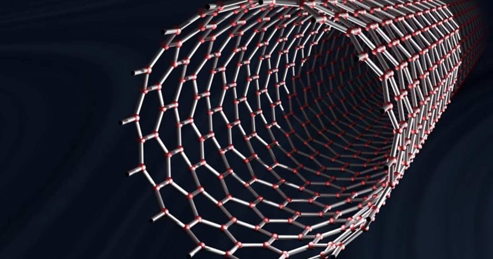

Carbon is an incredible element. It can take on numerous chemical configurations, including some we might recognize like coal and diamonds. It is particularly interesting as we assess the materials needed to erect a space elevator. The key is tensile strength.
The space elevator idea has two major conceptions.
In the earliest writings, philosophers and scientists thought of building a structure tall enough to reach space. This concept breaks down even before leaving the drawing board.
The other approach is to hold a space elevator in tension between the Earth and a counterweight object of sufficent mass beyond geostationary orbit, much like the way you might swing a rope around in a circle. The centrifugal force holds the rope extended from your arm. In the same way, a counterweight swung
by the Earth with a space elevator ribbon attached can be held in tension.
This tension is extraordinary, and it requires an extraordinary material to handle it.
That's where our nanotube friends come in.
Carbon nanotubes are microscopic tubes, like tiny straws, made from hexagonally patterned carbon atoms. They have incredible tensile strength. Theoretically, they can reach 100 to 200 gigapascals of tensile strength. In practice we're finding ___, which is more than ___ times what we need for the space elevator.
Carbon nanotubes were the missing key to make the space elevator feasible, and now they're ready for action.
